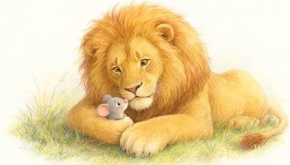
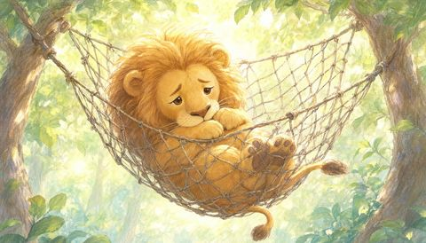
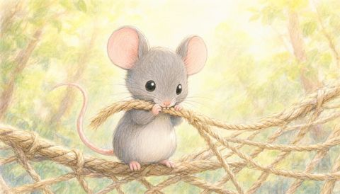
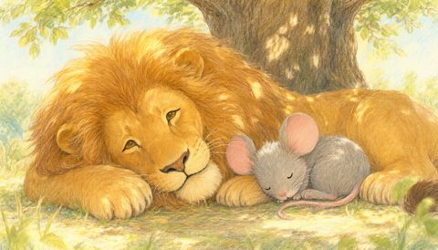

把公版故事或你自己寫的故事，做成多角色有聲書、兒童故事或睡前廣播劇：每個角色不同聲音、講話時自動壓低的輕音樂、跟著劇情換場的插圖，還有影片、封面和字幕。免費語音內建就能用，不用註冊、不用API key。 Turn a public-domain book or your own story into a multi-voice audiobook, children's story or bedtime radio drama — a voice for every character, gentle music that ducks under the dialogue, illustrations timed to the story, plus video, cover and subtitles. Free voices built in: no sign-up, no API key.
來自YouTube頻道「枕邊偵探社」將近200集的製作經驗。 Built from nearly 200 episodes of the YouTube channel Pillow Detective Agency.
全部用內建的免費語音做的，沒有用任何付費服務。All made with the free built-in voices — no paid service involved.

溫暖的說書人聲音、5張本機生成的插圖、自動生成的音樂盒搖籃曲。3分鐘。A warm storyteller, five illustrations drawn locally, a generated music-box lullaby. 3 minutes.
播放影片 ↑Play the video ↑從英文原著翻成台灣中文，旁白、福爾摩斯、委託人各一個聲音。前90秒。Translated from the original into Taiwanese Mandarin; narrator, Holmes and the client each with their own voice. First 90 s.
英文有聲書，英國腔旁白與福爾摩斯。前90秒。English audiobook with British narrator and Holmes. First 90 s.
Claude負責語言模型擅長的事；程式負責語言模型不擅長的事。任何要花錢的服務，都要先通過檢查才會被呼叫。Claude does what language models are good at; scripts do what they are bad at. Nothing that costs money runs until the checks pass.



同一隻獅子、同一隻老鼠：每張圖都用一模一樣的文字描述角色，畫圖模型才不會每張畫得不一樣。The same lion, the same mouse: every prompt describes each character in identical words, so the pictures stay consistent.
Project Gutenberg、網址或你自己的檔案，自動切成段落。Project Gutenberg, a URL or your own file, split into paragraphs.
逐段翻譯或改寫，一段對一段，之後再對照原文審一次。Translate or adapt paragraph by paragraph, then review against the original.
判斷每一句是誰說的，替每個角色挑聲音；也寫好插圖和配樂的提示詞。Decide who says every line and pick a voice for each character; write picture and music prompts.
漏翻的段落、說話者數不對、兩個角色撞聲……都在這裡被擋下來。Skipped paragraphs, miscounted speakers, two roles on one voice — blocked here.
每個聲音自動對齊旁白音量；配樂先檢查有沒有卡在同一個和弦。Every voice levelled to the narrator; music checked for frozen chords first.
−14 LUFS母帶、影片、封面、逐句字幕、章節和上架文案。−14 LUFS master, video, cover, sentence-level subtitles, chapters and upload text.
全部有一步一步的教學：怎麼申請key、怎麼用Suno做配樂、怎麼在自己電腦上畫圖。Every option has a step-by-step guide: getting a key, making music with Suno, drawing pictures on your own computer.
| 免費、不用設定Free, zero setup | 要帳號或keyWith an account or key | 自己的Your own | |
|---|---|---|---|
| 語音Voices | 微軟Edge語音Microsoft Edge voices | MiniMax（中文最自然）、OpenAIMiniMax (best Mandarin), OpenAI | — |
| 配樂Music | 自動生成的音樂盒搖籃曲Generated music-box lullaby | Suno（附教學與提示詞範本）Suno (guide + prompt templates) | 任何音檔Any audio file |
| 插圖Pictures | 本機ComfyUI（免費，要裝一次）Local ComfyUI (free, install once) | OpenAI、MiniMax | 任何圖、任何app畫的Any picture, from any app |
| 風格Style | 兒童故事 · 睡前廣播劇 · 有聲書Children's story · bedtime radio drama · audiobook | ||
不用懂混音。這些數字都是在真正上架的節目裡，一集一集聽出來的。No mixing knowledge needed. Every number here was tuned on episodes that actually went out.
對白和「他說」之間的停頓。語音引擎每段前後都會墊靜音，不修掉會隔整整一秒。Between a line and its “he said”. TTS pads every clip with silence; untrimmed, they sit a full second apart.
不同語音之間最多差這麼多。每個聲音都自動對齊旁白，半夜不用調音量。How far apart TTS voices can be. Every voice is matched to the narrator — no reaching for the volume at 1 a.m.
配樂比人聲低這麼多，有人說話時再自動壓下去。太大聲會吵，太小聲等於沒有。Music sits this far under the voice, and dips further while someone speaks.
成品響度，YouTube、Spotify、Apple都能直接上。峰值量的是編碼後的檔案。Finished loudness, ready for YouTube, Spotify and Apple. Peaks measured on the encoded file.
需要Claude Code、Python 3.9以上和ffmpeg。最後一行會告訴你的電腦現在能做什麼。You need Claude Code, Python 3.9+ and ffmpeg. The last line tells you what your computer can do right now.
教學：Guides: 付費語音與API keypaid voices & API keys · 配樂與Sunomusic & Suno · 插圖：本機或雲端pictures: local or cloud · 為什麼預設值是這樣why the defaults